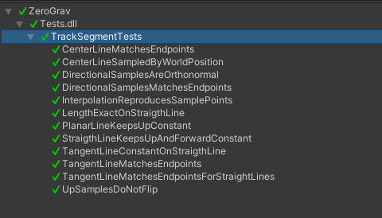

Devlog 002 – Track Segment Prototype
This short video shows the early prototype of track segments. They are generated based on the position and orientation of two reference points (TrackConnectionPoint). The yellow line that is visible in the clip is the central line, connecting the reference points such that the forward direction of the line matches the forward direction of the reference points. There is also a scaling factor that can be changed to adjust the slope and curvature of the track segment.
The local reference frame
The first type of track segments I implemented are based on a cubic Hermite spline. I start off with a short recap: the center line
connects the two points \(\mathbf{X}_0\) and \(\mathbf{X}_1\) such that \(\mathbf{X}(0)=\mathbf{X}_0\) and \(\mathbf{X}(1)=\mathbf{X}_1\). The tangent line \(\mathbf{T}(t) = \mathbf{X}'(t)\) shall match the scaled forward directions \(\mathbf{T}_i=\zeta\mathbf{f}_i\) at \(t=0\) and \(t=1\), so that \(A\), \(B\) and \(C\) are
From the tangent line, the forward direction is defined by \(\mathbf{f}(t)=\mathbf{T}(t)/|\mathbf{T}(t)|\). Finding a way to handle the local up and right direction was more challenging, however. I tried to come up with a closed-form expression for some time, but resorted to a parallel transport approximation, where the up direction is forward propagated and the error distribution backwards: the track is sampled \(N\) times, and the start point's up vector \(\mathbf{u}_0\) is turned around the the axis \(\mathbf{f}_i\times\mathbf{f}_{i+1}/|\mathbf{f}_i\times\mathbf{f}_{i+1}|\) proportional to the angle between consecutive \(\mathbf{f}_i\)s. The local up is then corrected, so that \(\mathbf{f}_i\cdot\mathbf{u}_i=0\). In all likelihood, this won't match the up direction of the second reference point \(\mathbf{u}_{N-1}\) and the mismatch angle is distributed amongst the up samples \(\mathbf{u}_i\) for \(i\in[1,N-2]\) by turning them around \(\mathbf{f}_i\).
The missing direction, the local right, is then \(\mathbf{r}_i=\mathbf{u}_i\times\mathbf{f}_i\), since Unity uses a left-handed coordinate system.
Unit tests and a problem with physical lengths
Now, the local reference frame on the track is defined at all sample points and can be interpolated between them. Although I found this slightly unsatisfying, I decided that it would do for a prototype and moved on to testing:

Let's look more closely at the tests for the straight lines:
public TrackSegment CreateStraightSegment()
{
var go = new GameObject();
var segment = go.AddComponent<TrackSegment>();
var start = new GameObject().AddComponent<TrackConnectionPoint>();
var end = new GameObject().AddComponent<TrackConnectionPoint>();
float L = 100f;
start.position = Vector3.zero;
end.position = new Vector3(0, 0, L);
start.rotation = Quaternion.LookRotation(Vector3.forward);
end.rotation = Quaternion.LookRotation(Vector3.forward);
segment.start = start;
segment.end = end;
segment.startSlopeFactor = L;
segment.endSlopeFactor = L;
segment.SendMessage("Generate");
return segment;
}
The scaling factor for the slopes (\(\zeta\) in the formulas) is set equal to the segments length. I did so intuitively, but there is a conceptual problem hidden here: for a straight element, if the beginning and end slope are equal to the elements length, then an equidistant sampling of \(t\) into \(N-1\) intervals results in an even spacing of samples along the center line in terms of the physical length
If segment.startSlopeFactor and/or segment.endSlopeFactor were to be changed, this would no longer be true. This is fairly evident if we look at the definitions of \(B\) and \(C\), which which one might assume would cancel out for a straight line (surely I did); but the only do so when \(\zeta=L\) and \(\mathbf{X}_1-\mathbf{X}_0=\mathbf{T}_0=\mathbf{T}_1\).
At this point, the reference frame samples \((\mathbf{u}_i,\mathbf{r}_i)\) were taken at equidistant spacing in \(t\), the spline parameter. To keep everything consistent, the sample points \(t_i\) are also where mesh vertices are located. This means that the distance between vertices is not equidistant in terms of the physical length \(L(t)\) though. If we look a bit into the future, this is most likely at least annoying. It relates to UVs as well and if the generated track segments shall use generic textures, this would result in heavy distortion of these textures.
I thus redistributed the sample points \(t_i\) of the spline parameter \(t\). Since \(t\) does not represent physical length, it is an internal parameter on track segments build on cubic Hermite splines. The more meaningful parameter \(l\in[0,L]\) is what is supposed to be used in the vehicle logic and measures the actual distance along the center line. The \(t_i\)s are chosen so that they result in a sampling of \(dl=L/(N-1)\) along \(\mathbf{X}(t)\) and the conversion between \(t\) and \(l\) is handled by interpolation form lookup table values internally.
Usage in the editor
By now, generating the mesh in the editor became to costly to do it simply by having the [ExecuteAlways] attribute. Instead, the TrackConnectionPoint allows for subscription to the onChanged Action, so that the track segments are only generated when the reference points are changed around.
[ExecuteAlways]
public class TrackConnectionPoint : MonoBehaviour
{
public float width = 10f;
public Vector3 position { get => transform.position; set => transform.position = value; }
public Quaternion rotation { get => transform.rotation; set => transform.rotation = value; }
public Vector3 forward { get => transform.forward; }
public Vector3 right { get => transform.right; }
public Vector3 up { get => transform.up; }
public System.Action onChanged;
private Vector3 lastPosition;
private Quaternion lastRotation;
public void OnEnable()
{
lastPosition = transform.position;
lastRotation = transform.rotation;
}
public void Update()
{
# if UNITY_EDITOR
if (HasChanged())
onChanged?.Invoke();
# endif
}
private bool HasChanged()
{
float pTol = 0.001f;
float rTol = 0.01f;
float dp = (transform.position - lastPosition).magnitude;
float dr = Quaternion.Angle(transform.rotation, lastRotation);
if (dp > pTol || dr > rTol)
{
lastPosition = transform.position;
lastRotation = transform.rotation;
return true;
}
else
return false;
}
}